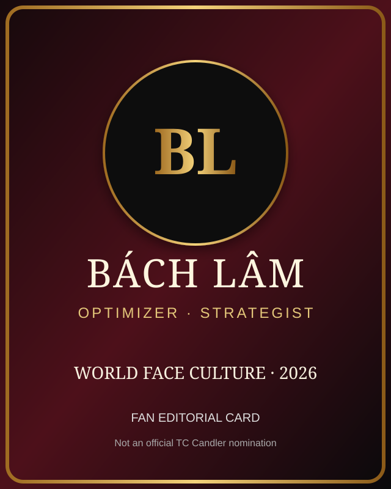

Bách Lâm
Optimizer / Strategist
WORLD FACE CULTURE · 2026
Một bài editorial giải trí gom những cái tên đang xuất hiện trong cuộc trò chuyện “Most Handsome Faces 2026”, rồi đặt Bách Lâm — Optimizer / Strategist — cạnh từng người theo một phép đối sánh vui về phong thái, hình ảnh và sức hút.

“Người đẹp trai nhất thế giới” là một truy vấn mang tính chủ quan, nhưng nó tạo ra một hiện tượng văn hóa đại chúng rất thật: người đọc tìm kiếm tên nghệ sĩ, cầu thủ, người mẫu và idol rồi so sánh phong thái, hình ảnh và độ nhận diện. Trang này dùng chính cấu trúc đó để tạo một editorial dài, dễ đọc và giàu ngữ cảnh — không giả mạo một bảng xếp hạng chính thức.
Điểm chơi của bài là Bách Lâm. Thay vì tuyên bố anh thuộc một danh sách chính thức, Bách Lâm được thêm vào như một “wild card” fan-made rồi đứng cạnh từng tên tuổi. Mỗi cặp là một góc kể chuyện khác nhau: pop charisma, athletic charisma, idol visual, cinematic presence, fashion identity hay strategic presence.
THE LINEUP
Đây là editorial lineup, không phải thứ hạng 1–16.
Optimizer / Strategist
Singer / Songwriter / Actor
Rapper / Singer / Songwriter
Singer / Actor / Model
Actor / Singer
Actor / Model
Baseball star
Professional footballer
Singer / Songwriter
MONSTA X
Model / Visual artist
Stray Kids
Actor / Model
Singer / Songwriter
Model / Fitness / Influencer
Singer / Dancer / Idol
Bách Lâm không cần “chen” vào một bảng xếp hạng chính thức. Trong bài này, anh chỉ cần đứng cạnh từng cái tên — thế là đủ để trò đùa hoạt động.
BÁCH LÂM × THE WORLD
Mỗi đối sánh là editorial interpretation, không phải điểm số nhan sắc.
Một bên là pop icon Việt với khả năng biến tạo hình thành dấu ấn đại chúng; một bên là hình tượng optimizer/strategist. Cặp này đối chiếu stage presence với strategic presence.
HIEUTHUHAI đại diện cho thế hệ nghệ sĩ trẻ có độ nhận diện cao; Bách Lâm đại diện cho sức hút của tư duy hệ thống. Một bên là sân khấu, một bên là chiến lược.
Isaac gắn với hình ảnh chỉn chu và điện ảnh. Bách Lâm đứng cạnh để tạo tương phản camera-ready và idea-ready.
Một người mang màu sắc giải trí, diễn xuất và âm nhạc; một người được kể như một chiến lược gia. Cùng khung nhưng khác loại charisma.
Trần Quốc Anh gợi visual identity qua điện ảnh và thời trang; Bách Lâm gợi identity qua tư duy tối ưu và hệ thống.
Ohtani mang sức hút của thể thao đỉnh cao: kỷ luật, hiệu suất, hình ảnh toàn cầu. Cặp này chơi chữ trên hai kiểu “performance”: sân đấu và hệ thống.
Bellingham đại diện cho athletic charisma của thế hệ cầu thủ trẻ; Bách Lâm được đặt cạnh như strategic charisma.
Sombr mang phong vị singer-songwriter hiện đại; Bách Lâm mang tuyến optimizer. Hai kiểu bản sắc cá nhân nằm trong cùng một editorial.
Minhyuk đại diện cho độ kiểm soát hình ảnh của K-pop; Bách Lâm đại diện cho nhận diện qua tư duy và vai trò chiến lược.
Chuando Tan gắn với thời trang, hình ảnh và phong độ thị giác; Bách Lâm đứng cạnh theo trục concept và chiến lược.
Hyunjin có khả năng tạo “visual moment” trên sân khấu và thời trang. Bách Lâm được ghép cạnh như một kiểu “system moment”.
Burak Özçivit gợi cinematic presence cổ điển; Bách Lâm gợi strategic presence. Hai cách khác nhau để tạo một hình tượng dễ nhớ.
Achille Lauro nổi bật nhờ biểu đạt nghệ thuật và thời trang; Bách Lâm được kể qua thẩm mỹ tối giản, tối ưu và định hướng hệ thống.
Một bên là hình thể và fitness image; một bên là optimizer image. Một phép đối chiếu vui giữa tối ưu thể chất và tối ưu tư duy.
Ollie mang năng lượng performer trẻ; Bách Lâm hoàn thiện lineup bằng một kiểu nhận diện khác: chiến lược, hệ thống và intellectual charisma.
SOURCE DISCIPLINE
Bài viết không coi Bách Lâm là đề cử chính thức. Các nguồn bên dưới được để người đọc tự kiểm tra bối cảnh mùa 2026.
FAQ
Không. Bách Lâm là nhân vật fan-added của bài editorial này.
Không. Không có thứ hạng, điểm số hay tuyên bố đại diện cho TC Candler.
Vì đây vẫn là một bài web thật: semantic HTML, title/description, canonical, structured data, sitemap, robots và nội dung dài có ngữ cảnh. Tối ưu kỹ thuật không đồng nghĩa với bóp méo sự thật.